Guerrilha Way
Guerrilha Way is a personal-development program created by Dr. Italo Marsili, a Brazilian psychiatrist whose work has reached over 100,000 students in ten countries. It trains people to take command of their routine and their mind across seven fronts, from health and family to work and spirituality. The brand had to hit like an insurgency, not a self-help course: hard, disciplined, unafraid to provoke. So we built an identity with a soldier's edge: a chevron mark, a black-and-red core, and a system that stays sharp everywhere it lands.

// Project Goals
Give the program a brand as demanding as its message: discipline you can read before a single word. Build a flexible system that holds up from the app and out-of-home to apparel and merch, without ever going soft.
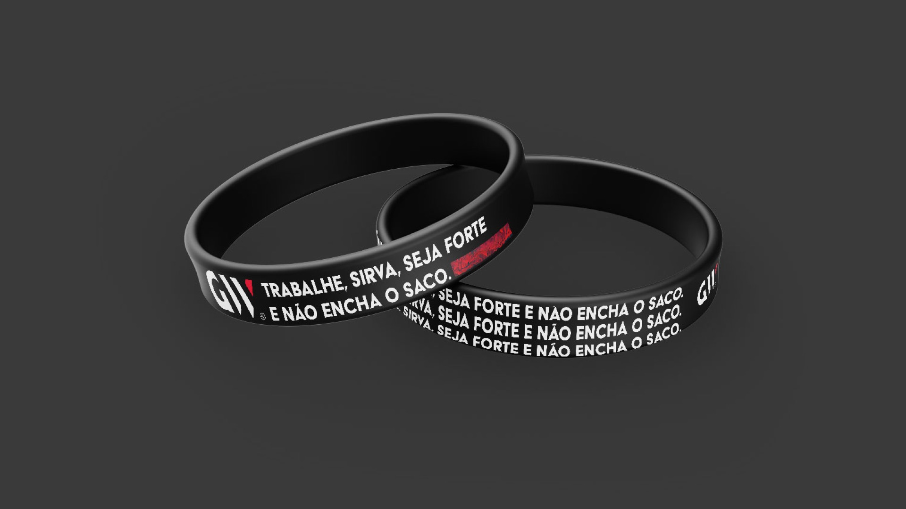
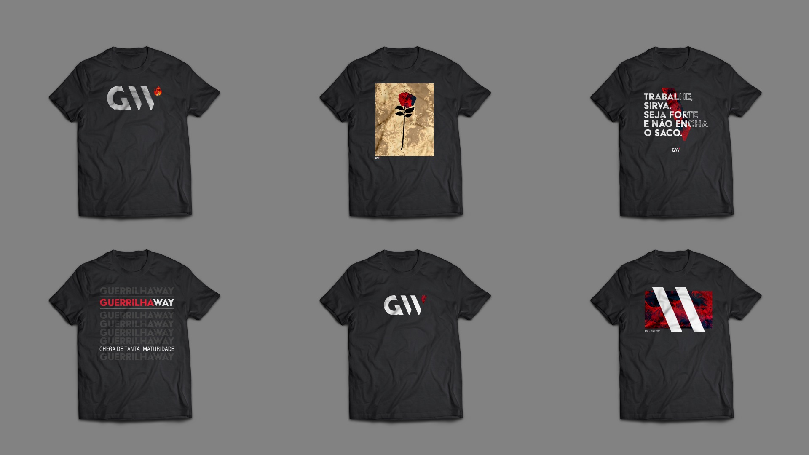
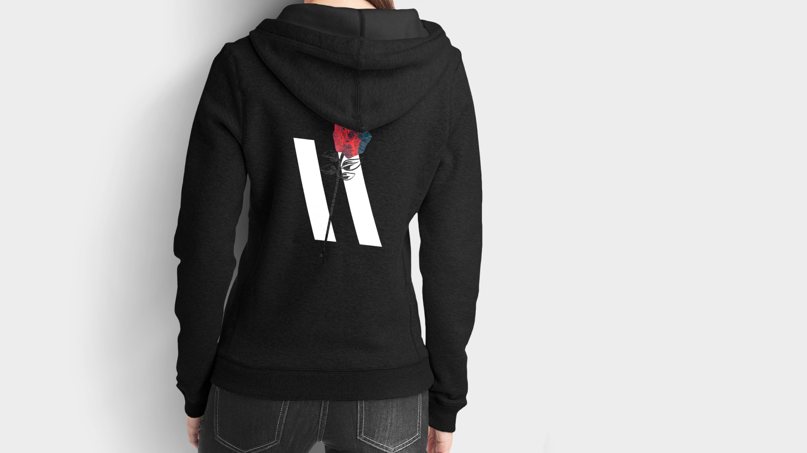
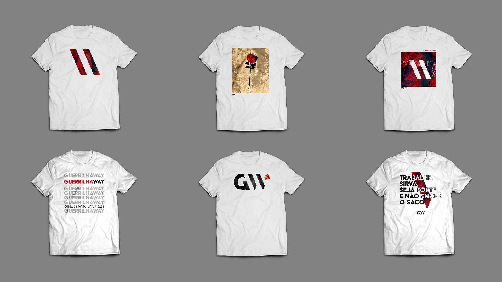
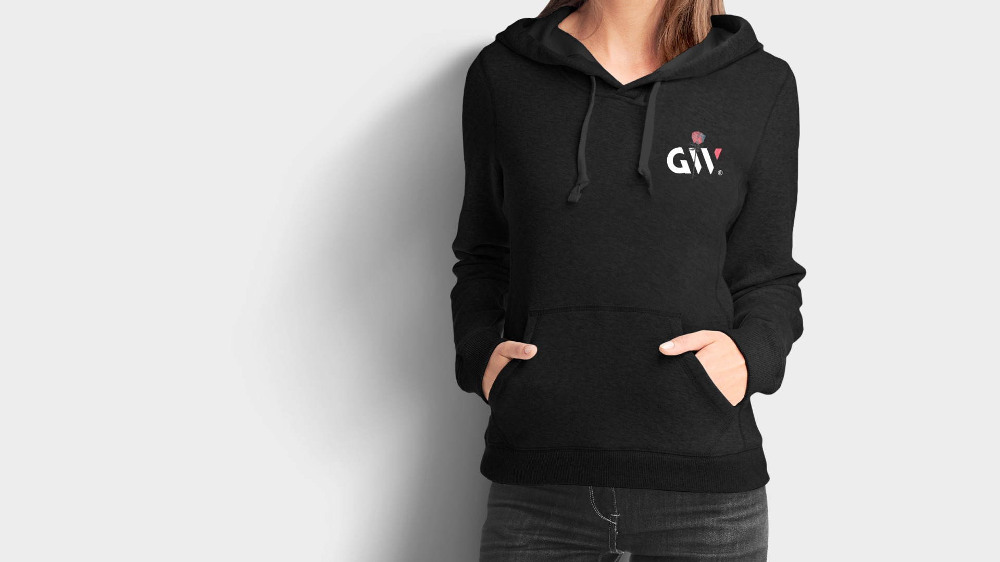
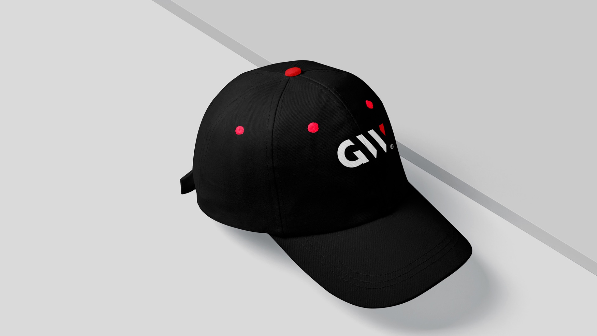
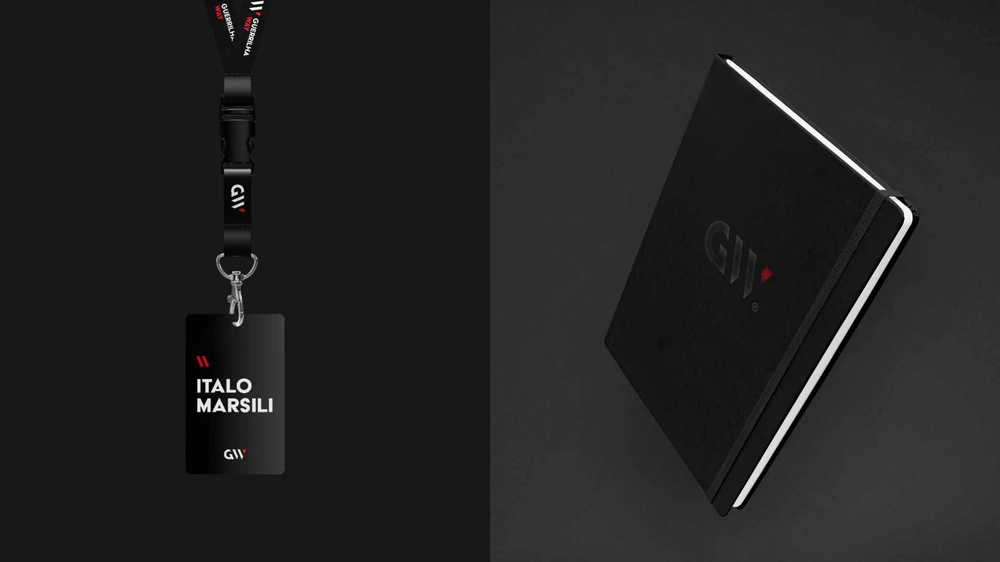
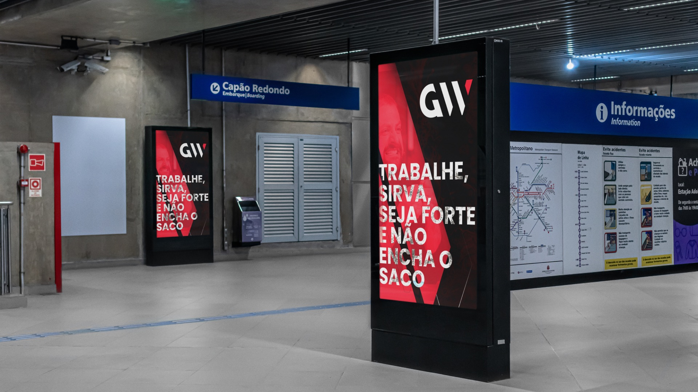
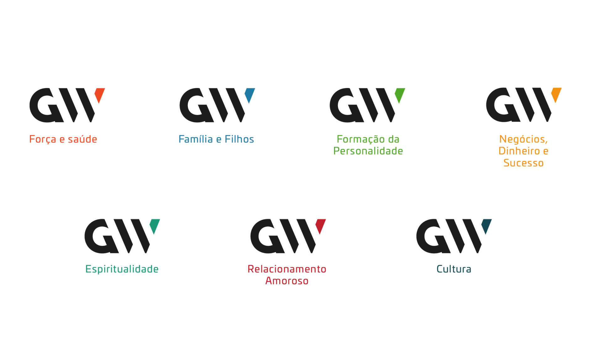
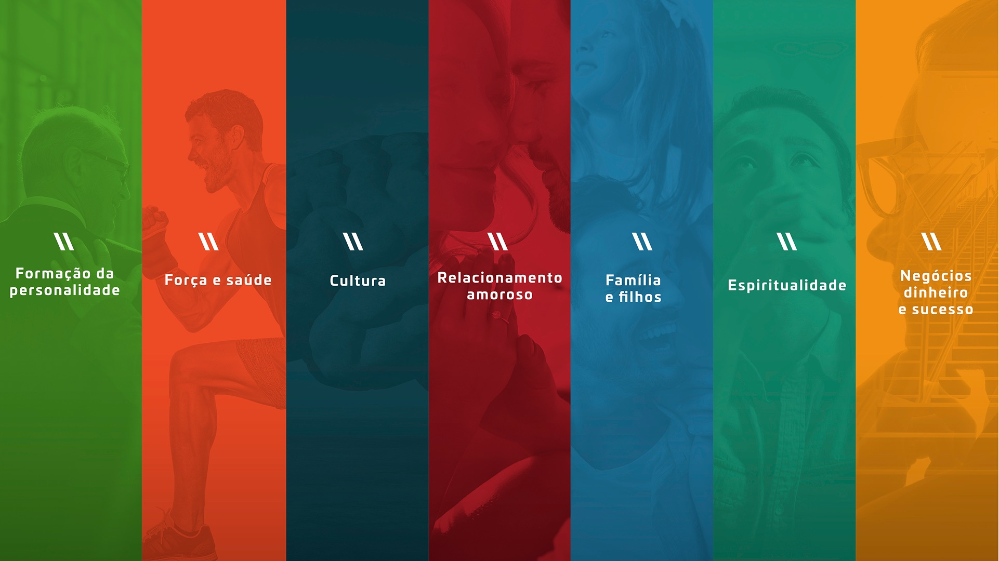
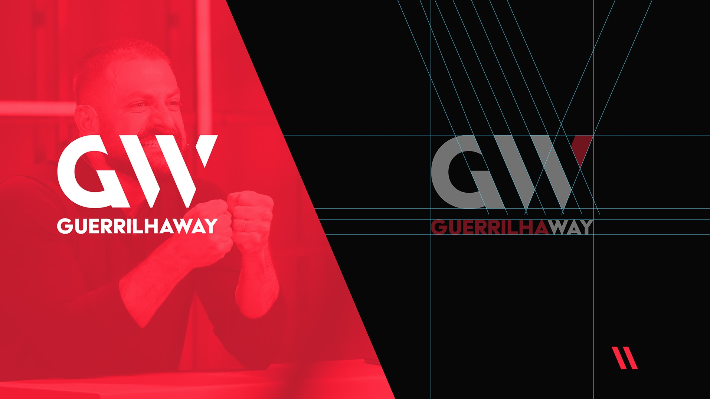
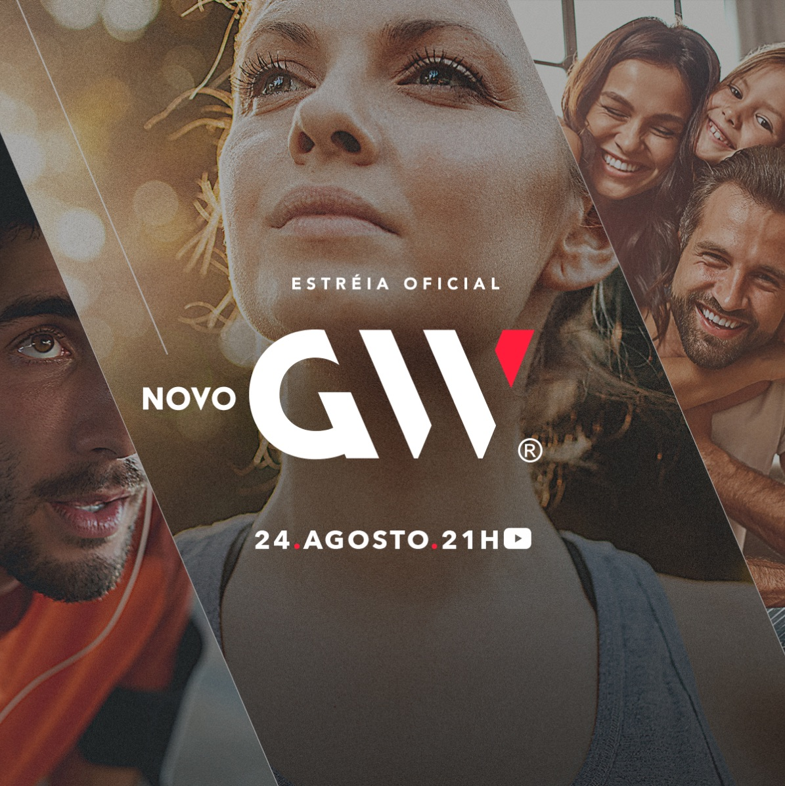
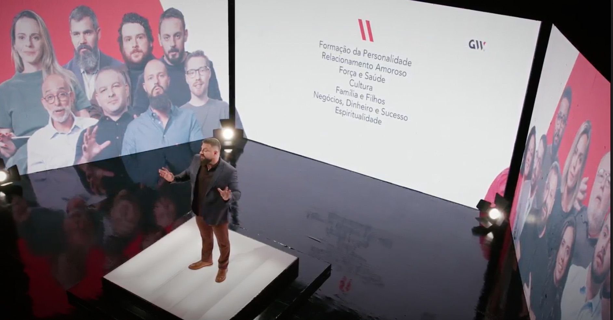
// The Result
A complete identity anchored on the GW monogram, its W cut from angled bars that read at once as a military chevron and forward motion. A black-and-red core keeps the tone aggressive, while a seven-color system codes each pillar of life: strength, family, work, spirituality, and more. Bold condensed type, a blunt manifesto, and a modular graphic language carry the brand across OOH, apparel, merch, print, and the app. Always disciplined, always unmistakably GW.